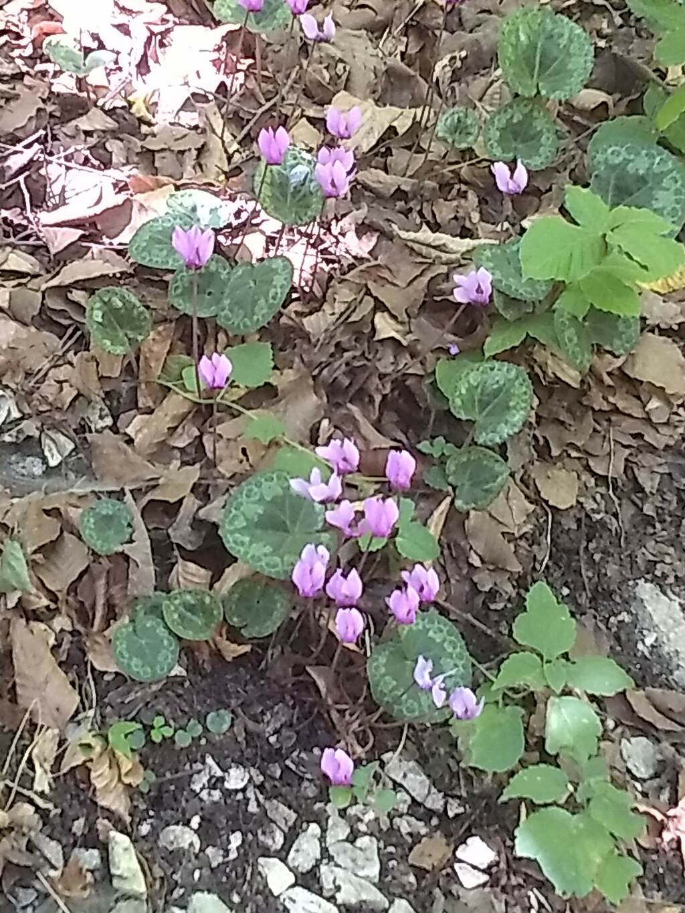

29.09 pluripotent
grabé un mix que extiende una idea de hace más de un año

tracklist
lágrima delgada resbala mientras el espacio se mueve,
el drama formado por aquellas líneas que no vemos
melancolía que se mueve como el calor
ºººº
amor eterno a david <~~223 por (entre otras cosas) ese track hermoso que estúpidamente critiqué hace años
·······
related keywords: emo, sidelong kiss, caricia por las orillas, florecimiento y putrefacción, spiritual automata